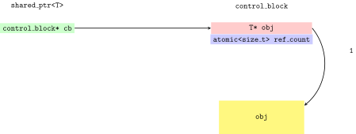
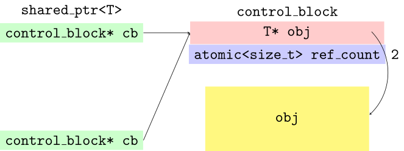

A deep-dive into Anthony William’s lock-free atomic<shared_ptr<T>> design
C++
Author
dev::author
Published
August 16, 2026
A quick refresher on standard smart pointers
Raw-pointers are low-level facilities that are extremely easy to misuse. It is not possible to infer the responsibility of the pointee - you cannot tell from the source-code, what the semantics are. There’s a huge risk of various programming errors e.g. memory leaks, double deletions etc. The standard smart pointers are an abstraction, a wrapper over raw-pointers that are harder to misuse, and provide clear ownership information.
%load_ext itikz
Smart-pointers are all about clarifying ownership of the resources(pointee objects).
Type
Description
std::unique_ptr<T>
Ownership semantics: Models sole-ownership of the resource semantics.
Special Member functions: Non-copyable. Move c’tor and assignment transfer ownership. The destructor is responsible for destroying the pointee.
std::shared_ptr<T>
Ownership semantics: Models shared co-ownership of the resource semantics.
Special Member functions: Copyable and Movable. The destructor of the last co-owner is responsible for destroying both the pointee and the use-count.
T*
Ownership semantics: No ownership is defined in the type system (ownership rules have to be inscribed in source code).
The main difficulty in writing a shared_ptr<T> is that, its a type with two responsibilities : it co-owns both the pointee and the usage counter, requiring special care. SRP(Single Responsibility Principle) in classical OOPs states that a type with a single responsibility is super-simple to get right than a type with \(2\) or more responsibilities. shared_ptr<T> is responsible for both the raw-underlying pointer T* and a pointer to the reference counter, both of which need to managed and shared between the co-owners.
Prototypical implementation of a shared_ptr
When the last co-owner of the resource is not known apriori, as often happens in concurrent code, we generally use shared pointers.
Here is a very minimalistic version of a shared_ptr.Basically, the shared_ptr itself is just this pointer to the control_block. The control block contains a pointer to the raw underlying object T* obj_ptr and a reference counter. The reference count is a shared variable between various co-owners, possibly in different threads and thus should be atomic<size_t>.
%%itikz --temp-dir--tex-packages=tikz,color --tikz-libraries=arrows --implicit-standalone\begin{tikzpicture}[scale=2.5,transform shape] \pagecolor{white} \draw(0,0.5) node [] {\ttfamily shared\_ptr<T>}; \node[rectangle, fill=green!20, text centered](A) at (0,0) {\ttfamily control\_block* cb}; \draw(5,0.5) node [] {\ttfamily control\_block}; \node[rectangle, fill=red!20, text centered, minimum width=4.5cm](B) at (5,0) {\ttfamily T* obj}; \draw[->, >=stealth, thick] (A) -- (B); \node[rectangle, fill=blue!20, text centered, minimum width=4.5cm](C) at (5,-0.5) {\ttfamily atomic<size\_t> ref\_count}; \node (RefCount) at (8.0,-0.5) {\ttfamily 1}; \node[rectangle, fill=yellow!50, text centered, minimum width=3.8cm,minimum height=1.5cm](D) at (5,-2.0) {\ttfamily obj};% Curved arrow from B to D \draw[->, >=stealth, thick, bend left=45] (B.east) to (D);\end{tikzpicture}

A single shared_ptr referencing an object
Now, what we can do is, we can copy the shared_ptr, which will create a new shared_ptr instance that points to the same control block and it’s going to increase the ref_count to \(2\).
Show the code
%%itikz --temp-dir--tex-packages=tikz,color --tikz-libraries=arrows --implicit-standalone\begin{tikzpicture}[scale=2.5,transform shape] \pagecolor{white} \draw(0,0.5) node [] {\ttfamily shared\_ptr<T>}; \node[rectangle, fill=green!20, text centered](A) at (0,0) {\ttfamily control\_block* cb}; \draw(5,0.5) node [] {\ttfamily control\_block}; \node[rectangle, fill=red!20, text centered, minimum width=4.5cm](B) at (5,0) {\ttfamily T* obj}; \draw[->, >=stealth, thick] (A) -- (B); \node[rectangle, fill=blue!20, text centered, minimum width=4.5cm](C) at (5,-0.5) {\ttfamily atomic<size\_t> ref\_count}; \node (RefCount) at (7.5,-0.5) {\ttfamily 2}; \node[rectangle, fill=yellow!50, text centered, minimum width=3.8cm,minimum height=1.5cm](D) at (5,-2.0) {\ttfamily obj}; \node[rectangle, fill=green!20, text centered](E) at (0,-2.5) {\ttfamily control\_block* cb}; \draw[->, >=stealth, thick] (E.east) -- (B.west);% Curved arrow from obj_ptr to D \node (ObjPtr) at (6.95,0.15){}; \draw[->, >=stealth, thick, bend left=45] (ObjPtr) to (D);\end{tikzpicture}

Two shared_ptr instances referencing an object
If a shared_ptr instance goes out of scope, it’s going to decrement the ref_count back to \(1\). If this is the last co-owner of the pointee, then the ref_count is going to \(0\), and as soon as that happens, the destructor ~shared\_ptr() will invoke delete obj_ptr and deallocates the object.
The state of the shared_ptr is basically the value of the control block - the object pointer and the reference count. Those are the two things that determine the shared_ptr.
Is std::shared_ptr<T> really thread-safe?
The C++ standard doesn’t really say very much about whether or not std::shared_ptr<T> is thread-safe. Let’ say that you have a shared pointer with ref_count = 1, and you make a copy of this shared pointer in thread t1 and another copy of the shared pointer in thread t2. Both threads t1 and t2 are going to see the value ref_count = 3 and we are not going to have a data-race. This is achieved by making the ref_count atomic.
Show the code
%%itikz --temp-dir--tex-packages=tikz,color --tikz-libraries=arrows --implicit-standalone\begin{tikzpicture}[scale=2.5,transform shape] \pagecolor{white} \draw(0,0.5) node [] {\ttfamily shared\_ptr<T>}; \node[rectangle, fill=green!20, text centered](A) at (0,0) {\ttfamily control\_block* cb}; \node(main) at (-3,0) {{\ttfamily main()} thread}; \draw(5,0.5) node [] {\ttfamily control\_block}; \node[rectangle, fill=red!20, text centered, minimum width=4.5cm](B) at (5,0) {\ttfamily T* obj}; \draw[->, >=stealth, thick] (A) -- (B); \node[rectangle, fill=blue!20, text centered, minimum width=4.5cm](C) at (5,-0.5) {\ttfamily atomic<size\_t> ref\_count}; \node (RefCount) at (7.5,-0.5) {\ttfamily 3}; \node[rectangle, fill=yellow!50, text centered, minimum width=3.8cm,minimum height=1.5cm](D) at (5,-2.0) {\ttfamily obj};% Curved arrow from B to D \draw[->, >=stealth, thick, bend left=45] (B.east) to (D); \node(t1) at (-3,-1.5) {thread {\ttfamily t1}}; \node[ rectangle, fill=green!20, text centered](F) at (0,-1.5) {\ttfamily control\_block* cb}; \draw[->, >=stealth, thick] (F.east) -- (B.west); \node(t2) at (-3,-3.0) {thread {\ttfamily t2}}; \node[rectangle, fill=green!20, text centered](G) at (0,-3.0) {\ttfamily control\_block* cb}; \draw[->, >=stealth, thick] (G.east) -- (B.west);\end{tikzpicture}